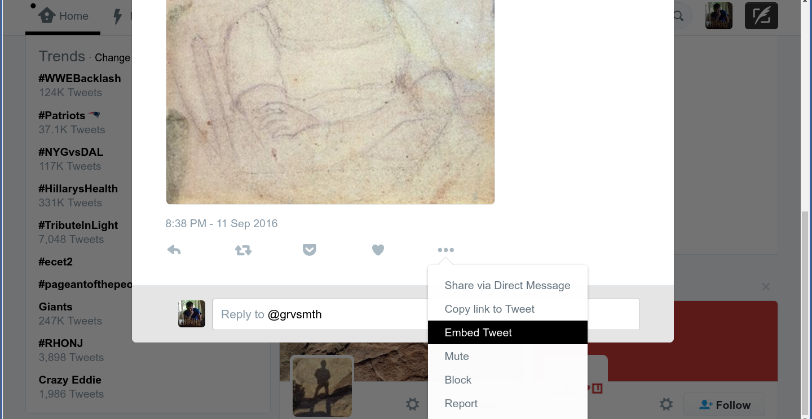

Embed a Tweet in your Post
Why Embed a Tweet?
When you embed a tweet, you allow your readers to use Twitter functionality such as reply, follow, and retweet without leaving your post. Embedded tweets also have a professional look and sidestep some attribution issues.
How to Embed a Tweet
- Find the tweet you want to embed in your post.
- In the bottom right corner of the tweet, click the
...(ellipsis or three dots) button. - From the dropdown menu, select
Embed tweet.

- Copy the HTML code from the box (it should already be selected for you).
- In the draft of your blog post, change to HTML mode by clicking the `Text` tab at the top right of the edit panel.
- Find where you want to add the embedded tweet and paste in the HTML you copied from Twitter.
- Preview the page to see your tweet embedded within the post. You may want to add <p> and/or <center> tags around the HTML you pasted to put some space between the tweet and the rest of the content.